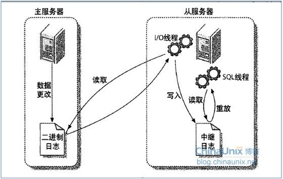

一.读写分离的技术简介
数据库的读写分离简单理解
对于数据库服务器集群而言，针对于客户端的数据读写操作进行分离，即采用一台数据库服务器提供对数据的增加、删除、修改等写操作的服务，其余的多台数据库服务器提供数据的查询等读操作的服务，前者被称之为主服务器，后者被称之为从服务器，主服务器与从服务器一般而言是一对多的关系，从服务器的数据会自动同步主服务器数据，准许轻微延迟。
读写分离的作用
1.方便实现数据库服务器集群，而且一台高性能的服务器远比一群低性能的服务器贵得多
2.很多应用当中，数据库的读操作远比写操作要频繁，而数据库的写操作会加锁，一同数据库服务器同时支持读写，性能会下降，将读和写进行分离，可以让数据库的性能大大提高
3.读写分离同时也有负载均衡的支持，
4.从数据库会自动同步主数据库，直接支持了数据库备份，数据也更加安全
5.经过读写分离架构以后，可以放心的在从库上进行数据分析和处理操作
读写分离中的负载均衡和故障转移
1.当主数据库奔溃时，可以自动选取从数据库充当主数据库
2.数据库查询时，优先查询当前性能开销最小的从数据库（不一定）
二.读写分离的技术难点
1.主从同步如何实现
基本各个数据库系统都提供了主从同步的支持，只需要简单配置即可搞定。更多的需求可以参考这些数据库的实现，主流实施方案是主库的所有更新操作写入二进制日志，从库负责从主库上拿二进制日志，然后本地执行，回放!
以下是MySQL的主从同步示意图：

1.数据库主从同步的核心在于日志。
2.主服务器会对数据的写操作全部生成二进制日志
3.从服务器会产生一个IO线程，一个SQL线程提供读写分离的支持
4.读写分离的流程：主服务器对数据库进行写入后会生成具体的二进制日志，从服务器的I/0线程会以主动（轮询）或者被动（远程调用）的方式读取主数据库的日志，随I/0线程会将日志数据写入到从服务器的中继日志，最后SQL线程会来读取中继日志，将日志中的数据库写入信息，写到自己的数据库当中去，到此主从同步完成。
2.读写分离如何实现
主从同步并不等同于读写分离，主从同步是读写分离的基础。读写分离的方案多种多样，主流的实现有:
- 购买云服务器厂商提供的读写分离服务，云服务厂商之间在应用系统和数据库系统之间引入中间层，从而做好了读写分离和负载均衡的相关策略，对外提供了一个读写分离的数据库地址，程序员直接拿着这个地址用就OK，更多可参考： 阿里云读写分离简介

- 直接在数据库驱动上下文章，通过在数据库驱动当中引入读写分离逻辑，从而解决读写分离问题，MySQL已经提供了提供了ReplicationDriver来支持读写分离，更多内容可以看 MySQL读写分离之com.mysql.jdbc.ReplicationDriver
- 使用数据库中间件，在应用系统中经过简单的主库和从库配置，然后读写全部通过该中间件，中间件会自动解析SQL，并且将数据库请求转发到主库或者某个从库之上，推荐当当网数据库中间件-sharding-jdbc。
- 业务代码显示使用多数据源，每个写事务指定主库，读事务指定对应的从库
3.负载均衡如何实现
这儿主要是指从库如何均摊读请求的压力和主库的故障转移。
主库的故障转移可以通过双活或者分布式技术来解决
从库均摊压力，可以通过轮流读，或者定期检测从库的运行参数来做优先级排队，然后使用带优先级的随机算法来选取从库，当然，如果从库崩溃，应该及时从集群当中移除。
上面的技术方案当中，除了多数据源方案以外，其它方案都或多或少有自己的负载均衡策略。
4.可扩展性如何实现
低侵入性，低耦合性就有可扩展性，读写分离的几种途径，从上到下依次是从数据库-应用的中间层，应用的数据库驱动层，应用的数据访问工具层，业务层来解决，从上到下，耦合性越来越高，可扩展性越来越低。
三.读写分离的实现方案
1.云服务器厂商直接提供
阿里云读写分离服务
2.mysql-jdbc驱动提供的读写分离API
ReplicationDriver
3.自定义底层开发驱动（和上面是一个方法）
准备以后搞搞底层驱动
4.数据库中间件
sharding-jdbc 棒
5.数据库工具层
自定义jdbctemplate基类，曾经做过一个demo:https://github.com/FanHuaRan/Read-Write-Separation
6.业务代码显式指定（多数据源）
中小型公司基本都是这样做的，可以借助spring来配置多数据源，@Profile
四.读写分离的延迟问题
MySQL的解决措施：
Master binlog的写入为多线程，而Slave同步的sql_thread为单线程（MySQL5.6之前），两者写入速度不一致，在高并发写入的情况下，Slave节点延迟会更大；所以读、写分离时，一般的做法是，应用程序加判断，
首先检查SLAVE节点同步位置以及状态是否同步至最新，确认其正常后，然后将查询请求发送至此节点。
方法如下：
1、请求发送过来时，首先在Master节点执行"Show master status"，记录下当前的binlog以及position
2、在SLAVE节点上，执行 select master_pos_wait(binlog, pos[, timeout]), 等待同步到最新节点，然后发送查询请求